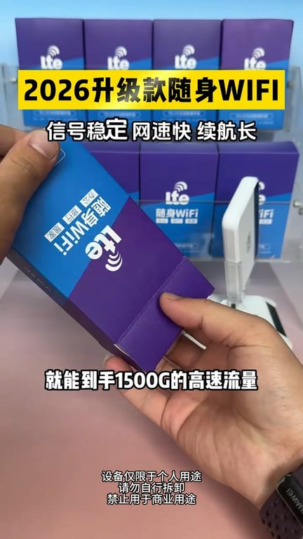

TOP 1 · 代表素材深度拆解
核心放量 点击承压
视频为原始素材 HTTPS 链接；点击后加载，建议在网络环境良好时播放。
23.9万素材消耗
1.26%CTR
19.2%类目消耗占比
-0.46pp较类目均值
表现判断
该素材是类目内第 1 名，属于“核心放量”；CTR 低于类目均值。消耗体现承接规模，CTR 体现首屏与定向效率，两项应结合判断，不能仅以单指标下结论。
表达标签
口播三段式证据
开场钩子一个月只需要9块8毛钱就能到手1500G的高速流量就这一部机器可以连接12部手机并且支持多台Wi-Fi设备同时连接使用
中段论证每压金没绑定没激活没开通单约单交不用步脚每个月多少钱每个月啊9块8毛钱1500G那流量用完怎么办你下个月接着用呗又不清零那可以同时连接几台设备同时连接8到10台设备手机、电视、电脑、监控小杜、小艾只要是可以连网的、上网的设备
结尾转化又不清零那可以同时连接几台设备同时连接8到10台设备手机、电视、电脑、监控小杜、小艾只要是可以连网的、上网的设备都能用、都能连那像我平时经常出差旅游可以啊你经常出差旅游逛个街啥的走到哪咱们网络跟你到哪农村也能用可以啊带到哪网络跟到哪刚才跟你说了你带到农村3G偏远的地区网络快信号还强
有效点
- 消耗占比 19.2% 说明具备投放承接能力，但 CTR 较类目均值低 0.46pp
- 口播包含明确到手机制或直播间指令，转化路径较完整
迭代动作
- 重做前 3–5 秒：结果前置、缩短背景铺垫，并把核心人群直接写进首屏字幕
- 中段每 5–8 秒补一次画面变化或证据点，避免同景口播造成信息疲劳
- 促销口径与资质信息保持同屏可验证，结尾只保留一个明确行动指令
合规关注

钩子建立 · 1.8s
场景/问题展开 · 13.3s
卖点证据 · 30.6s
转化收口 · 42.2s
查看完整口播摘要
一个月只需要9块8毛钱就能到手1500G的高速流量就这一部机器可以连接12部手机并且支持多台Wi-Fi设备同时连接使用一家人都去用的话一个月根本用不完一时代的Wi-Fi每压金没绑定没激活没开通单约单交不用步脚每个月多少钱每个月啊9块8毛钱1500G那流量用完怎么办你下个月接着用呗又不清零那可以同时连接几台设备同时连接8到10台设备手机、电视、电脑、监控小杜、小艾只要是可以连网的、上网的设备都能用、都能连那像我平时经常出差旅游可以啊你经常出差旅游逛个街啥的走到哪咱们网络跟你到哪农村也能用可以啊带到哪网络跟到哪刚才跟你说了你带到农村3G偏远的地区网络快信号还强